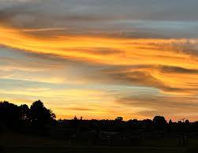

Top Attractions in Lesotho
Discover the natural wonders, cultural heritage sites, and adventure destinations that make Lesotho unforgettable

Thaba Bosiu
Natural Wonder & Historical Site
This sacred mountain plateau served as the fortress of King Moshoeshoe I and is considered the birthplace of the Basotho nation. At 1,804 meters above sea level, it offers breathtaking views and deep historical significance.

Bokong Nature Reserve
Natural Wonder
Home to diverse alpine flora and fauna, this high-altitude reserve offers pristine hiking trails and spectacular views of the Lepaqoa Valley. Perfect for nature enthusiasts and bird watchers.

King Moshoeshoe I Monument
Cultural Heritage
This impressive statue commemorates Lesotho's founding father, King Moshoeshoe I. The site includes a museum showcasing Basotho history and culture, making it a must-visit for history enthusiasts.

Thaba Bosiu Cultural Village
Cultural Heritage
Experience authentic Basotho culture in this reconstructed traditional village. Watch demonstrations of traditional crafts, music, and dance while learning about the Basotho way of life.

Basotho Pony Trekking
Adventure Tourism
Explore Lesotho's remote mountains on the back of a sure-footed Basotho pony. Multi-day treks take you through spectacular landscapes, visiting remote villages and experiencing authentic mountain life.

Ancient Rock Art Tours
Adventure Tourism
Discover ancient San and Khoi khoi rock paintings hidden in mountain caves. Guided tours provide insights into the lives of Southern Africa's earliest inhabitants and their spiritual connection to the land.
Featured Experiences
Mountain Kingdom Tour
A comprehensive 5-day journey covering Lesotho's most iconic attractions, perfect for first-time visitors.
Learn MoreCultural Immersion
Live with a Basotho family and experience daily life, traditional ceremonies, and authentic local cuisine.
Learn MoreAdventure Package
Combine horse riding, hiking, and 4x4 adventures for the ultimate outdoor experience in the Kingdom in the Sky.
Learn More